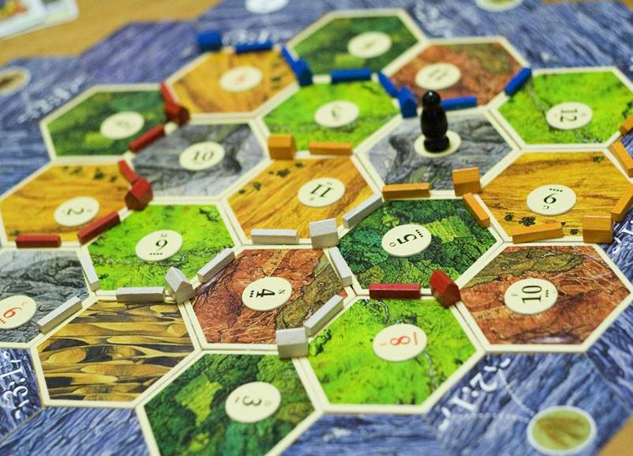
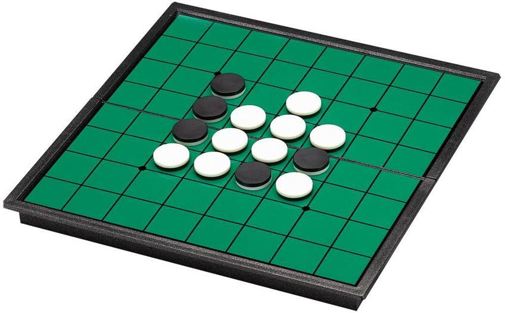
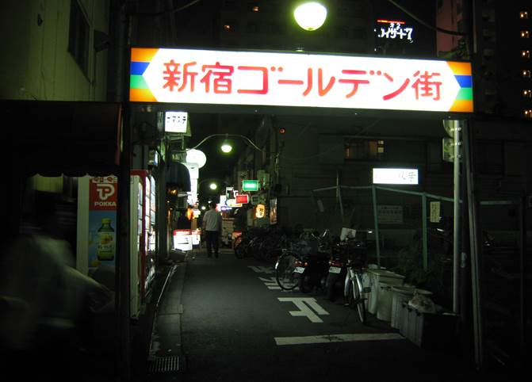

1. 攻略：
Ø 攻略须知
Ø 一周目攻略
Ø 二周目攻略
Ø 三周目攻略
Ø 四周目攻略
Ø 攻略原理
2. 出典：
Ø The Game全解：
Ø 规则
Ø 爱丽丝的特殊规则
Ø 格子颜色的意义
Ø 桌游类：
Ø 柏木游戏中心
Ø 苏格兰场
Ø 妙探寻凶
Ø 卡坦岛
Ø 强权外交
Ø Jumanji
Ø 黑白棋
Ø 猫女：
Ø 柴郡猫：
Ø 沃特希普荒原：
Ø 埃拉里拉
Ø 黑兔
Ø Fiver
Ø 太阳神弗瑞斯
Ø 彼得兔：
Ø 彼得兔
Ø 本杰明
Ø 莴苣
Ø 纳尼亚传奇：
Ø 纳尼亚传奇
Ø 雷普契普
Ø 阿斯兰
Ø 夏娃的女儿
Ø 大赚特赚
Ø 指环王：
Ø 黑骑士
Ø 索伦
Ø 阿拉贡
Ø 小熊维尼：
Ø 跳跳虎
Ø 维尼熊
Ø 克里斯托弗·罗宾
Ø 路易斯·卡罗作品：
Ø 白皇后
Ø 新宿风土人情：
Ø 狮子像
Ø 末廣亭
Ø 伊势丹
Ø 京王
Ø 新宿黄金街
Ø Dubliner
Ø 竹轮
Ø 鱼肉山芋饼
Ø 关东煮
Ø 十二社温泉
Ø 其它：
Ø 立方体万花筒
Ø 地板下的小矮人
Ø 江户之子
Ø 蛇头
Ø Coppélia
Ø 罗蕾莱的传说
Ø 海妖塞壬
Ø 玛士撒拉
Ø 所罗门王的指环
Ø 王之戒指
Ø 伊里·特恩卡
Ø 侧投
Ø 有牙阴道
Ø 业（佛教用语）
Ø 蛇头
Ø 野猫收容所
Ø Keeper
Ø Replay
3. 剧情：
Ø 二周目攻略
Ø 三周目攻略
Ø 四周目攻略
1. 攻略：
因为The Game的选项结构异常复杂，所以参考了bgm上的帖子：
[本文内容纯属扯淡] Forest – 简介、选项结构图、及逐章翻译梳理，以上面的选项结构图为基础，根据自己的摸索绘制了一个新的结构图（见下页），然后根据这个新的结构图自制了这份攻略。为方便各位的观看，结构图在Photo文件夹内有备份。
在攻略图里，蓝色方框表示选项，绿色方框表示重要剧情或选项，橙色菱形表示剧情的判断逻辑，白色方框表示纯剧情，黄色方框用来分隔两段大的逻辑结构。
这份攻略和我以前通关时采用的英文攻略最大的不同就是：一周目要看到灰流离开棋盘剧情。所以相对于英文攻略来说，在一开始额外增加了一个周目，即四周目。
该攻略是基于一周目完全没有打开任何剧情锁的基础之上的，所以如果你在多周目通关后，想完整体验第五章的剧情，请确保你进行过删存档——让剧情回到一周目的处理（删掉save文件夹里的rssave.dat文件，这样会让Forest的所有剧情锁回到一周目状态，且不伤及你之前玩过的存档，注意备份）。
另外，请在开始第五章的攻略之前存个档，这样会在切换周目的时候，不会浪费你的时间。
最后，因为The Game是在过于复杂，有些地方真的很难做到尽善尽美，出现错误或者是标注不清的情况也是在所难免，在这里先跟大家说声抱歉。
以下是完整攻略图：
_V_The_Game.files/image003.png)
|
选项 |
标注 |
|
九月 |
Hazel出现 |
|
安全第一 |
|
|
补充失去的点数 |
灰流离开棋盘 |
|
Grizabella的骰子 |
此选项为DE，选前一定记得存档！！ 死后读档 |
|
九月的骰子 |
|
|
奇数/偶数 |
|
|
需要更多数字 |
其实可以随便选， 但是这个选项出刈谷对话的可能性高 |
|
自信地扔 |
先避一下特殊DE |
|
使用我的gift |
三个选项里最有意思的一个 |
 目标：
目标：
b) 看到灰流离开棋盘剧情
c) 看到补充失去数值剧情
d) 看到刈谷和爱丽丝的对话（不保证一定能看到）
以下是在攻略图上的表示：
_V_The_Game.files/image004.jpg)
请直接读取第五章开始前的存档，注意从二周目开始，为了节省时间，我会用跳跃键跳过已读剧情，所以跟之前周目相同的剧情不会被重复记录。
|
英文 |
对应中文 |
标注 |
|
Nagatsuki |
九月 |
|
|
We’ve only started, play it safe |
安全第一 |
|
|
Don’t rush, take a break |
别冲，休息一下 |
九月离开棋盘 |
|
Make a last stand |
背水一战 |
|
|
Amamori |
雨森 |
|
|
Rolls it confidently |
自信地扔 |
先避一下特殊DE |
|
I’ll go back |
我会回去 |
|
 目标：
目标：
a) 解锁Grizabella上天堂
b) 解锁雨森介绍Peccólia
以下是在攻略图上的表示：
_V_The_Game.files/image005.jpg)
|
选项 |
标注 |
|
黛 |
Hazel不会出现 |
|
全力以赴 |
九月离开棋盘 |
|
前进！ |
|
|
她想去天堂 |
Grizabella上天堂 |
|
把骰子扔向黑骑士 （存档，在看到爱丽丝死亡之前持续读档） |
看到特殊DE后继续游戏， 黛版结局 |
 目标：
目标：
a) 看到没有Hazel版的结局
b) 看到Grizabella上天堂
c) 看到特殊DE（爱丽丝死亡）
以下是在攻略图上的表示：
|
选项 |
标注 |
|
九月 |
确保第七章不会出现BE |
|
别冲，休息一下 |
进入“雨森”选项 |
|
安全第一 |
|
|
背水一战 |
|
|
雨森 |
确保后面“我要离开”选项出现 |
|
自信地扔 |
|
|
我想离开 |
九月打破游戏 |
 目标：
目标：
a) 看到九月打破The Game的剧情
以下是攻略图：
1. 我只能在一周目不让九月逃离棋盘的情况下，才能看到灰流离开棋盘剧情，其它无论是什么方法都弄不出来，而全力以赴选项三周目必选，所以正好可以把英文攻略中没有通过的“补充点数”选项放在一周目攻略中。
2. 刈谷和爱丽丝争论时说的话我觉得很重要，但是看到这段话的条件我真的是百思不得其解，唯一确定的条件是需要看一次普通Dead End，但是其它条件真的是玄学。甚至我有一次在没看到之后，向上读档回到上一个选项，然后居然就看到了……所以一次攻略没看到也不要着急，而且翻译章节里有全文的翻译。
3. 选择“别冲，休息一下”通关之后，才能在下周目解锁Grizabella上天堂剧情。
4. 看过Grizabella上天堂剧情通关后，在下一个周目选“雨森”选项才会有九月打破游戏选项。
5. 看过Alice的特殊DE之后，才能解锁结尾的新剧情（即灰流的“一切都是巧合，森林不需要我们任何人。”）。
2. 出典：
² The Game全解
1. 一个非人类，一个人类，两人一组，最先到达最后一格的人胜出。游玩者可以被随意替换，但是被替换的玩家会被视作弃权。胜利的非人类可以实现一个愿望。如果人类和搭档的愿望一致，则两人的愿望会被一同实现。
2. 每个人都有一个不同的骰子，同组的两人同时掷出。追击的黑骑士正常情况下，以红色格子两格，其它格子五格的速度追来。
3. 当次掷出的点数会变成“消失点数”，如果下一次掷出消失点数会被惩罚，黑骑士在此轮以两倍的速度（4格/10格）移动。玩家可以选择休息一回合来补充点数。
4. 逃出棋盘10秒后会被取消资格，回到棋盘上也会被惩罚。
5. 被黑骑士追上之后，如果玩家扔出骰子击中黑骑士，则黑骑士和骰子上的所有点数均会消失，黑骑士会在起点重生。在其它情况下，玩家会被黑骑士杀死，进入一般DE（红色格子上的玩家死亡！）。
ü 黛：黄色格子上的黑骑士会比上次多移动两倍的距离。
ü 灰流：绿色格子每掷出一次丢失点数，就会多一个怪物（蛇鲨）。
ü 九月：只有准确地到达终点的格子才算胜利。
|
队伍 |
格子及颜色 |
骰子 |
愿望 |
|
九月 + Grizabella |
红色格子9格，圆形路线 |
均是6面体 |
上天堂的门票 |
|
刈谷 + Reepicheep |
蓝色格子40格，随机传送 |
刈谷正4面体，Reepicheep10面体 |
长生不老（被杀还是会死） |
|
黛薰 + Peter Rabbit |
黄色格子366格，螺旋阶梯（代表一年的天数，2004年是闰年） |
均是6面体 |
去更开心的地方 |
|
灰流 + Tripod |
绿色格子180格，有额外战斗 |
灰流8面体，Tripod12面体 |
为人类服务 |
|
格子颜色 |
意义 |
|
红色 |
爱与愤怒 |
|
蓝色 |
勇气与骄傲 |
|
绿色 |
梦与欲望 |
|
黄色 |
时间的道路 |
 The Game用的棋盘:
The Game用的棋盘:
在出版彼得兔的故事之后，出版社曾经发售过一款棋盘游戏，叫做“Peter Rabbit's Race Game”（彼得兔赛跑比赛），可供2-4名玩家进行游戏。游戏中有红蓝黄绿四条道路各123格。
Figure 0. 桌游“彼得兔赛跑故事”
柏木游戏空间（ゲームスペース柏木），新宿著名的游戏厅。
Figure 1. 柏木游戏空间的入口和内部场景
桌游苏格兰场，一名玩家扮演Mr. X，他的工作是乘坐出租车、公交或地铁在伦敦地图的各点之间移动。其他玩家扮演侦探，要尽力移动到Mr.X. 相同的区域进行追捕。但是尽管罪犯每次逃逸乘坐的交通工具几乎都是知道的，但是他在游戏中确切的位置只可能间歇的掌握。
Figure 2. 桌游苏格兰场
桌游卡坦岛是由德国人克劳斯·托伊伯发明的一种多人玩的图板游戏，最初由科仕谋思公司以卡坦岛拓荒者（Die Siedler von Catan）的名字在德国出版。托伊伯原创设计了基础版跟第一个扩充集海洋开拓者。
卡坦岛拓荒者是第一款在欧陆以外大受欢迎的德式桌上游戏，获得了1995年的德国年度游戏奖，1995年的德国游戏奖的第一名和1996年的原创奖。截至2015年，这款游戏被翻译成30多种语言，销售量超过2200万，还被拍成了电影和电视。

Figure 3. 桌游卡坦岛
Clue（或Cluedo，中文名妙探寻凶）是一款图版游戏，由英国伯明翰事务律师行文员Anthony Pratt创作。最初于1948年由Waddington Games在英国推出，亦曾由美国的Parker Brothers发行，但随着Parker Brothers被孩之宝收购，妙探寻凶现亦由孩之宝发行。
游戏背景是英国的一幢大厦，图版是一幅房间位置平面图。玩家扮演一个角色，也就是大厦的客人。大厦的主人黑博士（Dr. Black）被发现遭人杀害（北美版是Mr. Boddy）。
玩家均是嫌疑犯。最先找出凶手、凶器及行凶房间的玩家便可胜出。
英译把该词错翻成了cool。
Figure 3. 桌游妙探寻凶
强权外交（Diplomacy），也称作外交风云或外交，是由Allan B. Calhamer于1959年设计的经典桌游，具有数十年的历史，属于战棋及谈判类型游戏。这个游戏之所以成为经典是因为它没有骰子，而且资讯都是公开的，可以在游戏版上确认战斗能否胜利；所以对玩家而言，争取盟友变得尤为重要。因此，这个游戏具有高度的互动及外交深度。
Figure 4. 桌游强权外交
The Game的典故。Jumanji是一本由美国作家Chris Van Allsburg撰写和插图的1981年幻想儿童图画书，该书讲述的是一种神奇的棋盘游戏，在现实生活中玩耍时会有动物和其他丛林元素加入。
Figure 5. Jumanji棋盘游戏
黑白棋，又叫翻转棋（Reversi）、苹果棋或奥赛罗棋（Othello）。据日本棋类游戏专家长谷川五郎在2005年的统计数据，在日本，黑白棋爱好者的数目约为六千万人（日本将棋爱好者约一千五百万人；围棋之爱好者约五百万人；国际象棋爱好者约三百万人）。
黑白棋是19世纪末英国人发明的。直到上个世纪70年代日本人长谷川五郎将其发展，借用莎士比亚名剧奥赛罗（Othello）为这个游戏重新命名。奥赛罗是一个黑人，妻子是白人，因受小人挑拨，怀疑妻子不忠一直情海翻波，最终亲手把妻子杀死。后来真相大白，奥赛罗懊悔不已，自杀而死。黑白棋就是借用这个黑人白人斗争的故事。
棋盘共有8行8列共64格。开局时，棋盘正中央的4格先置放黑白相隔的4枚棋子（亦有求变化相邻放置）。通常黑子先行。双方轮流落子。只要落子和棋盘上任一枚己方的棋子在一条线上（横、直、斜线皆可）夹着对方棋子，就能将对方的这些棋子转变为我己方（翻面即可）。如果在任一位置落子都不能夹住对手的任一颗棋子，就要让对手下子。当双方皆不能下子时，游戏就结束，子多的一方胜。

Figure 6. 翻转棋
格里泽贝拉，音乐剧《猫》中最经典的角色，被称为“魅力猫”。
她年轻时是猫族中最美丽的一个，厌倦了猫族的生活到外面闯荡，但尝尽了世态炎凉，再回到猫族时已丑陋无比——她的样子最像人类，长发披肩，身穿黑色晚礼服，脚蹬一双高跟鞋。一曲《回忆》平息了所有猫儿对她的敌意，唤起了对她的深深同情和怜悯。最后由“领袖猫”老戒律伯送上天堂，去过另一种杰利科猫的生活。
Figure 7. “魅力猫”格里泽贝拉
 Gri-Tan
Gri-Tan
九月对Grizabella的称呼，原文“さん”，一般尊稱他人的用法，男女皆適用，中文上常譯為「○○先生／小姐」，無論是在姓氏或名字都可以接「さん」。
著名的柴郡猫，出自《爱丽丝漫游仙境》。他是一只咧着嘴笑的猫，拥有能凭空出现或消失的能力。甚至在它消失以后，它的笑容还挂在半空中。它总是带着平静、诱人的微笑来掩盖自己胆怯的个性。
_V_The_Game.files/image018.png)
Figure 8. 柴郡猫插画
《沃特希普荒原》是以一群野兔为主角的英雄式奇幻小说，由已故英国作家理查德·亚当斯所作。故事描写了以主角榛子（Hazel）为首的一群野兔们逃离即将被人类毁灭的兔场，追寻新的家园，而在一路上遭遇劫难的故事。这部小说标题取自主角野兔们建立新兔场的地点，英国汉普郡北区的沃特希普荒原，作者儿时也居住在该处的邻近地区。
本书的内容主要是由作者在乡下旅行的途中讲给自己小孩听的故事集结而成，2005年亚当斯为本作的新版书写作了新的序言。尽管许多出版社将本书作为动物寓言看待，但作者在序言中明确表示本作并不是寓言性质的文学作品。
这部作品是亚当斯的小说处女作，也是他最知名的一部作品，获得过包括卡内基奖和卫报文学奖在内的不少奖誉，是最为畅销的英文文学著作之一。1976年至今本书被陆续翻译成众多语言版本，在世界范围内从未停版，还曾被改编为同名动画电影与电视剧。
Figure 9. 《沃特希普荒原》封面
埃拉里拉，出自《瓦特普希高原》，作为兔子神话故事的主角之一出场。作为兔子种群的王子，他以自己的聪明狡黠多次和太阳神弗瑞斯斗智斗勇，竭力维持了种群的生存，被尊为兔子唯一的神。
Figure 10. 兔神埃拉里拉
出自《瓦特普希高原》，黑兔是兔子世界中的死神，它在预定的死亡时间将兔子带走。 他生活在地球上的一个到处都是死兔子，且充满了疾病，死亡和悲伤的地方。尽管“黑兔”在兔子民俗中享有很高的声誉，但它并不是真正的邪恶。他只是执行太阳神弗瑞斯给自己的任务，以便兔子的种群永远不会被毁灭，并且黑兔会对未经他同意杀害兔子的人进行可怕的复仇。
Figure 11. 死神黑兔
榛子是《瓦特普希高原》的主角。他是第一个相信弟弟的梦境的兔子。他以卓越的领导力和天赋带领他的兄弟迁徙到新的领地。在故事结尾，年迈的榛子在黑兔的召唤下（成为他的精英兔）离开。
Figure 12. 兔群的领导者榛子
《瓦特普希高原》中榛子的弟弟，一窝兔子里最小的一位。战斗力不强，但是能够对各种危险做出准确的预言，帮助种群渡过诸多难关。
太阳神弗瑞斯，《瓦特普希高原》故事的创造者。为了对抗兔子的无止境繁殖，他给予其它动物杀死兔子的渴望；但是因为他很中意埃拉里拉，也曾许下兔子的种群不会被毁灭的诺言，所以他给予了兔子警觉性和敏捷的后腿，让他们能够躲避天敌。
出自《小兔彼得的故事》（英语：The Tale of Peter Rabbit），是碧雅翠丝·波特创作的经典儿童绘本，在1902年10月由费德里克·沃恩公司首度出版。描绘了顽皮的彼得兔不听妈妈的劝告，进入麦奎格先生菜园子里偷吃的故事。至今该作已被翻译成30多种语言出版，成为最畅销的童书之一。于2000年更被美国纽约公共图书馆推选为世纪经典童书第一名。
比得兔的名字，是来自于作者波特小姐童年时所饲养的一只兔子。最早的比得兔故事原形，是来自于1893年，波特小姐写给她家庭教师的儿子的信件。这位家庭老师的儿子诺亚长期卧病在床，所以波特小姐以说故事的方式，作为这位小男孩的娱乐，并且在故事当中鼓励他。
另外，《彼得兔》作为幼教读物在日本非常流行。在日本，有一个专门的碧雅翠丝·波特的复制版故居，以及一个彼得兔的主题公园。出版社统计在日本至少有80%的人听说过彼得兔的故事。
Figure 13. 《彼得兔》中的插图
本杰明，出自《小兔本杰明的故事》，内容是在描述彼得兔跟他的表哥本杰明一起回到麦奎格先生（Mr. McGregor）的菜园，想要找回上次彼得兔掉在这里的夹克跟鞋子。相较于《彼得兔的故事》，波特小姐对于兔子世界做出更深入的描述。这是一个平行于人类社会的完整兔子社会。
本杰明在彼得死亡后加入游戏。
Figure 14. 彼得和本杰明一起收集洋葱
埃瑞拉让教授吃莴苣是让他打瞌睡，这出自于在“彼得兔”系列绘本中的《弗洛浦茜的小兔子的故事》。开篇就提到过“有人说吃很多的莴苣就会犯困，我是没有打过瞌睡。弗洛浦茜家的小兔子吃过莴苣后就会打瞌睡，对于他们来说莴苣的催眠作用是很厉害的。”
《纳尼亚传奇》，是一套七册的奇幻小说，由已故英国作家C·S·刘易斯在1950年代所著，为英美文学经典之一。
故事的开始讲述一个小男孩和一个女孩偶然进入了一个异世界，称为纳尼亚，并在那里经历过一连串的冒险，及看到那个世界的创造。之后，他将一颗从异世界带来的种子（苹果）埋在花园里，还长成了一颗大树。这棵大树后来被飓风刮倒，又被造成了衣橱，然后又引领了四个小孩子进入这个神奇国度的不同时期，每一本互有关连，但亦可独立阅读。它是第二次世界大战以后英国最伟大的儿童文学作品之一。
_V_The_Game.files/image025.jpg)
Figure 15. 《纳尼亚传奇》书本封面
雷普契普是纳尼亚的会说话的能言老鼠之一，也是他们的领袖。他也是凯斯宾最忠诚和最勇敢的骑士之一，他的副手是皮皮克西克（Peepiceek）。
雷普契普在凯斯宾的统治之前和期间生活，对狮王阿斯兰（Aslan）完全忠诚和忠实。 阿斯兰结束纳尼亚世界后，他还欢迎纳尼亚七友（也就是七位从现实世界来的人）来到阿斯兰国家。
Figure 16. 雷普契普
出自《纳尼亚传奇》，狮王阿斯兰，纳尼亚世界的创造者，是充满智慧、仁爱、荣耀、正义与力量的狮王，率领孩子们对抗邪恶势力，保卫纳尼亚王国。阿斯兰象征着基督教中的圣父、圣灵、圣子三位一体中的圣子。
阿斯兰在《纳尼亚传奇》七部曲中的每一部里都有出现，是贯穿首尾的角色，具有崇高的地位，是纳尼亚王国的拯救者，海外皇帝之子，而不仅是人们认为的普通狮子。应该说，阿斯兰是纳尼亚故事的真正主角。
Figure 17. 狮王阿斯兰
在《纳尼亚传奇》中，纳尼亚的居民们称呼来到纳尼亚世界的女性儿童为“夏娃的女儿”，男性儿童“亚当的儿子”。
在《纳尼亚传奇》第三部《黎明踏浪号历险记》提到过“雷佩契普，纳尼亚王国会说话的兽类中最英勇善战的老鼠大军的头头。在柏卢纳的第二次战役中，它赢得了不朽的殊荣。露茜巴不得把雷佩契普搂在怀里，抱抱它。过去她一直都想这样做。可是她也很清楚，这种乐趣她可休想享受得到，因为这样做会深深得罪它的。所以她就单腿跪下跟它说话。”因此能够拥抱雷佩契普是很难的。
《指环王》是一部由英国牛津大学教授、语言学家J·R·R·托尔金创作的史诗奇幻文学作品。这个故事原是托尔金早年创作的儿童幻想小说《霍比特人》（英语：The Hobbit）（1937年）之续篇，但随着故事的发展逐渐变得恢弘庞大。此作品绝大部分完成于1937至1949年，约与二战期间相符，因此有人相信此作在某些方面亦受到该场战争的影响。《指环王》一书为畅销书籍，不同版本已售出超过一亿五千万册。
由于二战后纸张短缺，全书被分为三卷出版，因此常被误认是一“三部曲”，即今天广为人知的《指环王》三部曲。分别称作《护戒同盟队》（The Fellowship of the Ring）、《双塔奇兵》（The Two Towers）、《王者归来》（The Return of the King）。其中每一部又分为两册出版，并收录了相关的背景资料。此后，《指环王》一书被译为多种语言并重刷多次，成为20世纪最具影响力的奇幻文学作品之一。
这个故事的标题“The Lord of the Rings”（指环王）指明了最主要的反派角色——堕落的神明索伦（Sauron），他创造了一枚戒指来统领其他戒指，并以此作为对抗甚至统治中土大陆（Middle-earth）的终极武器。
Figure 18.《指环王》电影剧照
在托尔金奇幻小说的中土大陆里，纳兹古（Nazgûl，来自黑暗语的Nazg及Gûl，解作戒灵），即戒灵、九戒灵或黑骑士（Dark Riders）是黑暗魔君索伦（Sauron）的邪恶奴仆。在1954年至1955年出版的《魔戒》里登场，书里形容戒灵是索伦手下最恐怖的奴仆。
索隆于第二纪元1697年间将九枚力量之戒赠与了九位强大的凡人。世说其中三位是努门诺尔贵族，而唯一知名的是东夷中的国王“东方魔影”可哈穆尔[2]。
起初那九位人类使用戒指的力量来获得巨大的财富、声望与权力，使得他们成为了强大的国王、巫师与武士。戒指的力量也延长了他们的生命，他们开始看见原先看不见的东西。
随着时间的推移，他们的肉体被力量之戒侵蚀殆尽，成为不可见的灵体。最终，九位持有力量之戒曾经伟大的人类都渐渐被手上所持的戒指奴役，一一落入索隆至尊戒的掌控，成为了那兹古尔，戒灵。他们无法反抗索隆的意志并失去了自我意识。一些人类被轻易奴役，而那些内心强大或尚存善念的则挣扎了一段时日。
_V_The_Game.files/image029.jpg)
Figure 19. 黑骑士Black Rider Nazgûl
索伦（英语：Sauron），是英国作家约翰·罗纳德·鲁埃尔·托尔金（J.R.R. Tolkien）的史诗式奇幻小说《魔戒》中的人物。索伦曾跟随维拉奥力，是迈雅中的饱学之士，从奥力处学习到出神入化的工艺技术。在阿尔达初创之时，米尔寇引诱他加入自己的阵营。索伦作为他的副官，获指挥安格班的要塞和守军的权力。太阳纪583年愤怒战役爆发，魔苟斯被推翻后，索伦在第二纪元再次出现在中土。他以美善的外表帮助伊瑞詹的精灵打造十九枚力量戒指，但他秘密在魔多打造了力量强大的至尊魔戒，但是很快他的阴谋被精灵所察觉。在1693年开始了1200年的“精灵与索伦战争”。
第二纪元3319年，索伦战败被俘，腐化“黄金大帝”阿尔-法拉松并攻打阿门洲，致努曼诺尔陆沉，阿尔达“星球”由平面地球重塑为球型地球。
第二纪元3430年，最后同盟军开始了7年的巴拉多之围。3441年，索伦被人类和精灵联军包围于巴拉多，迫不得已的索伦带着魔戒亲自出战，击杀盟军的领袖伊兰迪尔和吉尔加拉德，正当局势发生逆转时，伊兰迪尔儿子埃西铎斩下索伦带着戒指的手指，索伦遂败亡。
第三纪元1000年左右，索伦灵体成形，占领了瑟兰督伊领土边境的多尔哥多，并自称死灵法师。孤山任务时期，甘道夫领导白道会攻打索伦，索伦逃回魔多。魔戒圣战时期，霍比特人佛罗多登上末日火山并摧毁戒指，索伦彻底瓦解。
Figure 20. 魔王索伦
阿拉贡二世（Aragorn II），即伊力萨王，白树之君。是英国作家J.R.R.托尔金所著小说《魔戒》中的人物。他是阿拉松二世与吉尔蕾恩之子，埃西铎的第三十九代嫡孙，第十六任登丹人酋长（第三纪元2933年–3019年），刚铎及亚尔诺重联王国开国国王（即刚铎第三十四任国王，亚尔诺第二十六任国王，第三纪元3019年–第四纪元120年）。他是魔戒远征队的九名成员之一，也是魔戒圣战时期的核心人物。
阿拉贡两岁时被带往瑞文戴尔寻求庇护，养在瑞文戴尔精灵领主埃尔隆德(Elrond)膝下。埃尔隆德为幼子取名"埃斯特尔(Estel)"，意为“希望”。他正式治理国家后使用“伊力萨·泰尔康塔”(Elessar Telcontar)这一名号，意为“精灵之石·神行客”。“神行客(Strider)”是阿拉贡早年，布理地区的人们对他的蔑称。他第一次在跃马旅店被介绍给可爱勇敢的霍比特人就是用这个名字。魔戒圣战胜利后，阿拉贡用昆雅语翻译这个词为“Telcontar”，并把它作为王室的名号。
Figure 21. 阿拉贡
² The Many Adventures of Winnie the Pooh
《小熊维尼历险记》，是1977年迪士尼第22部经典动画长片。本片叙述了一只十分爱吃蜂蜜的熊的故事，但他其实是一个小男孩罗宾的玩具熊，罗宾想像他和这只熊住在一个叫“百亩森林”的地方，当地还有许多其他的动物邻居伙伴们，像是兔子、小猪、跳跳虎…等等，这一切的故事其实都是罗宾所想像出来的。
Figure 21. 《小熊维尼》中的维尼卡在洞口的经典场面
跳跳虎是一个虚构的老虎角色，最初是在A. A. Milne的《小熊维尼》的续集《维尼角的房子》中引入的。 像其他维尼熊角色一样，跳跳虎也是基于克里斯托弗·罗宾·米尔恩（Christopher Robin Milne）的毛绒玩具动物中的一种。游戏中的跳跳虎同时兼任送报纸的虎面具。
Figure 22. 跳跳虎
小熊维尼，1925年12月24日首次面世，以圣诞故事形式在伦敦《新闻晚报》刊出；第一本《小熊维尼》故事书于1926年10月出版。小熊维尼是艾伦·亚历山大·米恩为他的儿子创作的一只漫画熊；而古典维尼是由谢培德（E.H.Shepard）所绘，后由华特·迪士尼公司购入并经过重新绘制，推出后因其可爱的外型与憨厚的个性，迅速成为世界知名的卡通角色之一。
性格特点：小熊维尼是特别的熊，它天真单纯，乐观好奇。它有时贪吃，有时懒散，却改变不了它体贴和乐于助人的特质，它有时妙语如珠充满智慧，有时茫然无措惹人怜爱。
_V_The_Game.files/image034.jpg)
Figure 23. 小熊维尼
克里斯托弗·罗宾·米尔恩（Christopher Robin Milne），《小熊维尼》和两本诗集的男主人公，现实原型是作者A. A. Milne的独子，曾是一名英国书商，去世于1996年4月20日。
_V_The_Game.files/image035.jpg)
Figure 24. 克里斯托弗·罗宾的卡通形象
美国当代艺术家麦克·凯利。 自1980年代以来，他一直很活跃，专门研究与吉祥物等本地字符交织拼凑在一起的艺术。 2012年1月自杀身亡。
像游戏中维尼熊的身体是用毛绒动物拼制成的“半人半成品”系列。
Figure 25. 迈克·凯利的艺术品
蛇鲨，出自《猎鲨记》（The Hunting of the Snark），是英国诗人路易斯·卡罗于1874年创作的打油诗，当时他42岁。 这首诗借鉴了小说《爱丽丝镜中奇遇》中的短诗《Jabberwocky》（无聊的话），尤其是其中的人物和混成词，但是它是一个独立的作品，于1876年由麦克米伦出版社首次出版。插画由亨利·霍利迪（Henry Holiday）创作。
Snark = “Snail” + “Shark”，也就是蜗牛和鲨鱼的结合。在原作中，蛇鲨是被狩猎的一方。而在Forest里，蛇鲨是狩猎玩家的一方。
Figure 26. 《猎鲨记》第一版封面
出自《镜之国的爱丽丝》，出现在镜国一本书中的荒诞诗"Jabberwocky"中的生物，“Jabberwocky”也被誉为是英国最伟大的荒诞诗之一。
Jabberwocky意为“无聊、无意义的话”，最早出现在刘易斯·卡罗尔的儿童文学作品中，刘易斯的自编词。《爱丽丝梦游仙境》中，恶龙Jabberwock像恐龙一样高大，脖子很长，有着一副爬虫的翅膀，身上还覆盖着鳞片，它的爪子长而尖锐，长着两条分别向上向下的尾巴。在预言中的辉煌日，Jabberwock被手持佛盘剑的爱丽丝斩杀。
Figure 27. Jabberwock，John Tenniel于1871年绘制的插画
潘达斯奈基是刘易斯·卡罗尔（Lewis Carroll）1872年的小说《镜中的爱丽丝》和他1874年的诗《猎鲨记》中的虚构生物。 尽管这两部作品都没有详细描述这种生物的外观，但是在《猎鲨记》中，它的脖子很长，下巴也很咬紧，两部作品都将其描述为凶猛而异常快速。在《镜中的爱丽丝》中，有暗示它会出现在镜子的后面。在《猎鲨记》中，冒险者穿越海洋后发现了这种生物。潘达斯奈基曾出现在卡罗尔作品的各种改编作品中。
Figure 28. 插画中的潘达斯奈基（右侧生物，左侧是Jubjub bird）
“白皇后”是《爱丽丝梦游仙境》中的角色，和叫嚷着砍头的红皇后形成对立，在她开朗活泼的性格下又有着少许的邪恶与调皮的腹黑，地下王国的合法统治者，白棋女王是绝对控制并主宰所有死去事物的女主人，她正确的统治，为仙境带来了幸福。
Figure 29. 白皇后与爱丽丝的插图
在新宿有两个显眼的狮子像。第五章九月提到的狮子像指的是东口“狮子广场”上兼用作募捐箱的铜像。由于很显眼的关系，这个地方是人们常常约定的碰头地点，也是流浪汉们常常盘桓的地方。这座石狮雕像，由公共福利社团「东京新宿LIONS CLUB」建造而成实狮子的口中有开个洞，用途是将钱放入其中做为募款用途。募款单位时常有变动，可以在石狮雕像旁的说明板确认是哪个单位在进行募款。
而另外一个是作为新宿三越象征的狮子像。是模仿伦敦特拉法加广场的狮子像而来的。（顺便一提，特拉法加广场的狮子像在纳尼亚传奇的电影里也有过象征性的出镜）
纳尼亚传奇的完结篇——最后之战中，那头愚蠢的驴子“迷惑”，有一章讲述的就是它披上一头死狮子的皮假装阿斯兰蛊惑人心的故事。Forest里的驴子，毫无疑问就是罗宾的伙伴之一，地下居民里的驴子“屹耳”。在游戏第七章中的追逐戏部分，狮子（恐怕就是阿斯兰）和屹耳一起登场，这也许就是出自“最后一战”中二者邂逅的场景。
Figure 29. 新宿狮子广场的狮子像（左）和新宿三越的狮子像（右）
新宿三丁目的演艺剧场（末廣亭），新宿末廣亭是一個位於新宿的曲藝場。可以在這里欣賞到單口相聲、剪紙、雙人相聲、曲藝等藝術表演。由於表演正宗而且價格相對低廉，很受年輕人歡迎。
每天進行的常規演出稱為定席，節目和演員每個月會更換三次。每月上旬的演出稱為“上席”，每月中旬的演出稱為“中席”，每月下旬的演出稱為“下席”。演出分為兩場，早場是12:00~16:30，夜場是17:00~21:00。
除了定席，每周六21:30~23:00會有一場深夜寄席，以及新年的初席。
Figure 30. 末廣亭
伊势丹（いせたん）是一家日本连锁百货公司，由三越伊势丹控股旗下的株式会社三越伊势丹负责营运。在日本关东地方、中国和东南亚等地设有分店。
伊势丹最早是一间在1886年创立的和服店。目前包括关系企业在全日本共开设了12间店面，新宿总店的营业额占了全部的六成一上。伊势丹的强项是在流行服装方面，绅士馆的成功，打破了日本百货业界男性服装销售状况不佳的传统。伊势丹集团以百货事业为核心，旗下另有消费金融、金融、零售和其他等四个事业部门，共计37间公司组成伊势丹集团。整个集团的营业额约7,700亿日圆。创业时就开始使用在圆圈中置入书法字体的“伊”字的商标，之后在1975年、1986年两次变更过商标。不过创业时期的标志依然继续作为公司章使用，同时各店铺也设置原始标志的铭板，而新宿总店本馆的招牌也是使用最初的标志。
目前伊势丹集团在百货公司营业方面，共计有15间子公司，27间店铺 (日本国内14间、海外13间)。 新宿本店于1933年9月28日开幕，是营业额占所有分店总和六成以上的旗舰店(包括邮购事业等店外营业额)，在流行服饰方面营收相当出色。分为本馆和Men's馆(绅士馆)，两馆合计卖场面积达64,296m²。
Figure 31. 伊势丹新宿本店
京王电铁，简称京王，是一家日本铁路公司，同时为大手私铁之一，主要运营范围在东京都西南部至神奈川县北部一带。
东证第1部上市企业，京王集团的中核企业。在大手私铁之中对于多角化经营较为谨慎，因而在平成大萧条后各社遭受不动产价格下滑、流通不振、旅游低迷等问题时，仍能够保持健全财务。
京王此名称意指连结东京与八王子之铁道。在1998年6月30日以前，公司名称是由旧“京王电气轨道”与“帝都电铁”之线路组合成的京王帝都电铁（略称：京王帝都、京帝，“Keio Teito Electric Railway”，缩写为“KTR”）。
游戏中指的是新宿京王百货店，位于新宿车站西口正上方，提供日本美食, 化妆品, 时装, 运动用品，婴幼儿用品等丰富商品。
Figure 31. 新宿京王百货店
灰流逃出棋盘时标志牌上的字，翻译过来就是新宿黄金街，曾出现在Reminiscence I: Akeru章节中。
新宿黄金街是位于日本东京都新宿区歌舞伎町1丁目的一条餐饮街。这里聚集有超过200家小型餐厅及酒吧，是日本文化人的聚集地之一，因此也是东京的文化艺术发信地之一。

Figure 32. 新宿黄金街一景及标志牌
全名THE DUBLINERS' IRISH PUB 新宿店，指的是在新宿人气极高的一家爱尔兰风情酒吧，于1995年开业的一号店。这家店是目前东京都内现存最古老的爱尔兰酒吧，在当地居住的爱尔兰人、爱尔兰音乐家等，有许多和爱尔兰相关的人都会来店光顾。店内的空间很充足，是地地道道的酒吧风格，平常会聚集很多来自异国他乡的客人，是个充满活力的文化交流场所。
Figure 38. THE DUBLINERS' IRISH PUB 新宿店
竹輪是日本传统食品，做法是把鱼肉泥、面粉、蛋白、调味料混合，裹在竹签或细木枝上并以火烤或蒸熟。现在多已改用机器制造，不再使用传统的做法。
Figure 33. 竹輪
鱼肉山芋饼是一种白色，正方形，三角形或圆形鱼糜制品，口感柔和，温和。这种饼可以作为关东煮或汤中的一种成分食用，也可以油炸或烤制。
Figure 34. 鱼肉山芋饼
关东煮（関東煮、関東炊き）是关西人给这种料理的名称。台湾又音译作黑轮。1997年中国大陆的日资便利店罗森把おでん引入大陆，并称其为熬点。通常材料包括煮鸡蛋、萝卜、蒟蒻、竹轮、海带结、魔芋丝等，这些材料都放在昆布或者鲣鱼汤里煮。可以用来佐饭，也可以当作小吃来吃。
有说关东煮源自“味噌田乐”，那就是用水煮熟豆腐或者蒟蒻，再用味噌（面豉）调味后进食。
关东各地制作关东煮的方法会有所不同。不过跟一般的锅料理不同，关东煮制作简便，材料可以随时放进汤里煮。因此冬天的时候，这种料理尤其受欢迎。在日本，关东煮可以在便利商店或者路边摊买来吃。
在日本以外，关东煮在台湾也十分流行，其中黑轮也称为甜不辣。“黑轮”是台湾闽南语中带有齿音性质的边音导致的类化；台湾的关东煮大部分已独立为当地口味，且在放置的材料上，也有相当的差异性。外观上也有长条、圆形扁平状的区别，主要由鱼浆制成。
Figure 35. 关东煮
十二社温泉，位于东京新宿区的一日洗浴设施，游戏中说进入需付1900日元，温泉东侧就是新宿中央公园。该设施与2009年3月29日关闭。
Figure 36. 十二社温泉
墨西哥摔角（西班牙语：Lucha libre，原义为自由格斗），又名自由摔角，是发源于墨西哥的一种职业摔角运动。类似于自由式摔角，其规则比较自由，因而得名。
墨西哥摔角的特色在于选手脸部带着面具，面具对于在墨西哥摔角当中的选手来说，就有如是他们的角色象征以及荣誉等，他们绝对不会在其他人面前随意拿下面具，当他们拿下面具时，就是代表者他们的职业生涯结束或是退休也有可能是要准备更换成其他角色了。
因此，有时候选手们之间也会拿面具相互的当作赌注，赌上彼此的荣耀。
Figure 36. 墨西哥摔角
万花筒，一种光学玩具，将有鲜艳颜色的实物放于圆筒的一端，圆筒中间放置三棱镜，另一端用开孔的玻璃密封，由孔中看去即可观测到对称的美丽图像。
看上去像骰子的万花筒在英文中有一个专属词汇cumos，解释为cumos = cube + cosmos，也就是立方体中的宇宙的意思。这种特殊的万花筒由日本著名造型艺术家山崎稔于1975年发明，在 1980年举行展览：「光の美操（ビックリ）箱・CUMOS展」，并因此获得诸多奖项。
现在还有一个专门介绍cumos的官网，有兴趣可以看看：http://cumos.jp/
Figure 37. 左图为立方体万花筒CUMOS，右图为一个万花镜中的图像
《地板下的小矮人》在“under the dwarfs”一章中出现的一家矮人的名字。父亲Pod，母亲Homily，以及13岁的女儿Arrietty。他们在游戏里是矮人Tripod的祖先。刈谷熟知原作中的三个矮人有着类似人类的相貌，因此看到Tripod之后感到十分诧异。
Figure 37. 《地板下的小矮人》图书封面上的一家三口
² "Engelsch"
这段小矮人和灰流消灭蛇鲨后的对话在英译中进行了简化。
原意大致为：
（矮人）要是骰子完好无损的，我们不就没有后顾之忧了吗？
（灰流）你好烦啊，别在这种小事上纠缠不清了。
话说你该不会是江户之子吧？
（矮人）嘿嘿，你猜对了，咱可是从祖爷爷那辈从英格兰那边迁过来的哟。
江户最早是由豪族江户氏所统治，17世纪德川家康在关原之战中取得关键性的胜利，由此开始了以江户城为据点的江户幕府统治时期，江户也因此作为一座政治城市而登上历史的舞台。19世纪，随着幕府的最后终结，日本社会进入了明治维新时期，开始积极吸收并引进西方的文化，建设自己的民族国家。在这期间，皇室从京都迁到江户并改称为东京，成为新的日本首都。而江户城则相继改名为东京城、宫城与皇居，最终成为国家象征天皇的居住地。 简而言之，江户是东京的旧称，江户之子也就是，土生土长的东京人。
就江户子的性格，众多研究者列举出了“外表花哨的少爷”、“莽撞好强”、“性急易怒”、“生活方式轻浮而草率”、“自以为是”等特点。此外，还有一广为人知的概念是：“家中非连续三代生在江户的话不能称作江户子”。同时，在表现江户子这一形象上，还有展现其豪爽金钱观的著名语句：“江户子不留隔夜钱”，在川柳“江戸っ子は五月の鯉の吹き流し”、“江戸っ子の生まれ損ない金を貯め”等中也可见到这一面。现代可见的江户子典型形象是“出手大方、不拘细节、固执易怒、时常玩文字游戏但不善辩论、人情味足多愁善感，一身正气” 、“ 潇洒不羁”等，以及性急、没耐性，这些特性也被称为“江户子气质”。
一部以埃塔·霍夫曼的小说为基础的法国歌剧。 1870年3月首映。这是一个由美丽的娃娃Coppélia，主人公弗朗兹（Franz）在不知情的情况下坠入爱河以及他的爱人Swan Hindle创造的爱情故事。
可疑的魔术师的科波皮乌斯博士在博物馆里制作真人大小的娃娃。 一次，城市中的年轻人弗朗兹（Franz）爱上了最美丽的科佩利亚（Coppélia）。 同时，博士正试图用自己的灵魂赋予科佩利亚生命，他想利用偷偷摸摸看科佩利亚的弗朗兹...
Figure 39. 歌剧Coppélia剧照
《荒诞书》，爱德华·李尔（1812-1888）的一部著名诗集。作者是19世纪英国著名的打油诗人、漫画家、风景画家，一生周游于欧洲各国。 顾名思义，这本书包含许多奇怪的图片和诗歌。
Figure 40. 《荒诞书》的封面
罗蕾莱的传说是，在罗蕾莱礁石上坐着一个名叫罗蕾莱的女人，她用一把金色的木梳梳理着她金色的长发，过往莱茵河的船员被她美妙的歌声所吸引，因为没有注意到危险的湍流和险峻的礁石，而不幸与船只一起沉入河底。
德国海德堡派浪漫主义诗人克莱门斯·勃伦塔诺（Clemens Brentano，1778年9月9日—1842年7月28日）在1801年的叙事诗“在莱茵河边的巴哈拉赫城”（德语：Zu Bacharach am Rheine）中写道罗蕾莱是一位迷人的女人，她的美丽抓住了所有男人的心，也最终夺去了他们的生命，他将罗蕾莱描绘成给船员带来死亡的海妖塞壬。
Figure 41. 莱茵河上的罗雷莱雕像
塞壬（Siren）是希腊神话中人首鸟身（或鸟首人身、甚至跟人鱼相类）的女怪物，经常飞降在海中礁石或船舶之上，又被称为海妖或美人鸟。她们是河神埃克罗厄斯（Achelous）和斯忒洛珀（Sterope）的女儿（一说是埃克罗厄斯和缪斯女神之一的墨尔波墨涅或忒耳普西科瑞所生）。她们的别名是阿刻罗伊得斯（Acheloides），意即“阿刻罗俄斯的女儿们”。
根据荷马史诗《奥德赛》中描写，塞壬女妖们居住在西西里岛附近海域的一座遍地是白骨的岛屿上，她们用自己天籁般的歌喉使得过往的水手倾听失神，航船触礁沉没。
民间的迷信传说认为，塞壬最初为美丽的海上女仙，后来被描绘为邪恶的精灵。她们同样是女人的头和鸟的身躯，塞壬与哈耳庇厄相似，但鸟身女妖多被描写成凶暴粗野，兴灾作乱的恶兽；而诱人致命的塞壬，却是姿容娇艳、体态优雅，有时也会被描绘为美人鱼的形象。
Figure 42. 海妖塞壬
玛士撒拉细胞是黛的教授的研究课题，目的是永生。在现实中并没有这种细胞，玛士撒拉一般指玛士撒拉基因，是一种长寿基因。它存在于约一成的青年人身上，但是有近百分之三十的百岁老人携带这种基因。
这种基因能够保护人们免受吸烟和不健康饮食的影响，以及把与老年相关的疾病例如癌症和心脏病推迟三十年。这一基因的发现也有可能将“长命百岁”变成人人可以达到的目标。
玛士撒拉这个名字出自《圣经》中所记录的最长寿的人，他活到了969岁。根据《创世记》5：27写道，“玛士撒拉共活了九百六十九岁，就死了。”他的长寿使其名字成为了不少古老东西的代名词。
Figure 41. 圣经中的玛士撒拉
Solomon这个名字出自《所罗门王的指环》，作者康拉德·洛伦兹（Konrad Lorenz），奥地利动物行为科学家，并于1973年获得诺贝尔生理学或医学奖。
对洛伦兹的评价：他的深刻观察以及生花妙笔之下，我们身边的鸭、鹅、狗、鸟、鱼的生活全都鲜活的呈现眼前，让读者从中体会到科学研究的严谨及趣味，同时也对动物的有情世界及相类似的人类行为本身，有更深一层的了解，从而产生同理心，体认生命的真谛。
乌鸦则是出自“肯辛顿公园的彼得潘”中一只叫所罗门的乌鸦。
Figure 43. 《所罗门王的指环》初版
传说拥有所罗门的戒指即可获得通晓一切动植物语言的能力。劳伦兹的著作也是因此而得名的。他的原话是“根据史料记载，所罗门王能够和鸟兽虫鱼交谈。这事我也会，虽然我比不上所罗门王，能够和所有的动物交谈，而只能和几种我特别熟悉的动物交谈。这点我承认，但是我可不需要魔戒的帮助，这点他就不如我啦！要不是靠魔戒的力量，就算是最亲密的宠物，老国王也听不懂它在说些什么。而且，当他不再拥有魔戒时，他甚至会硬着心肠对待动物。所罗门王是在盛怒中将魔戒抛得老远的，那是因为有一只夜莺向他泄密：他那九百九十九位爱妃之中，有一位爱上了年轻的小伙子。"
“所罗门王可能是极聪明，也可能极笨，这点我不敢说。照我看来，需要用到魔戒才能和动物交谈，未免太逊色了一点。活泼泼的生命完全无须借助魔法，便能对我们述说至美至真的故事。大自然的真实面貌，比起诗人所能描摹的境界，更要美上千百倍。”
伊里·特恩卡，1912年出生于奥匈帝国Pilsen（现捷克Plzen）。如同许多东欧的动画家，他的作品在歌颂国家文化，特别是民俗风情时，也隐约地对当下的政治情势提出评论。
他制作的木偶可爱而细致，场景与服装也一样精细而美丽。而且他开始注意到偶动画与偶剧场的不同处，不再让片中的偶有可以眨巴眨巴动的眼睛和嘴巴，而是利用镜头与灯光来转换气氛。他同时也是个说故事高手，他很早便体认到“故事线”对偶动画的重要，不管是改编或是自创，他让原本无生命的木偶成为可爱可亲的角色，栩栩如生地表演出一个个精彩动人的故事。
在第二次世界大战结束后，他被指派成立捷克国家电影动画部门，十年间几乎所有捷克的偶动画作品都出自他旗下的工作室。他只活到五十八岁（因心脏病卒于1969年12月30日，布拉格），靠着几部动画作品，迅速地使奎基电影公司扬名。像是1959年改编自莎士比亚名作的长篇动画《仲夏夜之梦》（Sen noci svatojanske）就是其代表作之一。
Figure 44. 伊里·特恩卡
原文中指代用棒球侧投的方式来丢骰子。
侧投（又称侧肩投法）为棒球投手的出手点之一，指投手投球时，以手臂横摆的方式出手的投球方式。一般所提之侧投多半指典型侧投手，也就是左投手以九点钟方向，而右投手以三点钟方向为出手点的投手，出手点稍高者可视为四分之三侧投(Low three-quarter)，而稍低者可视为低肩侧投，但低肩侧投的动作机制与侧投有相当大的歧异。
侧投的投球方式与四分之三投法类似。在投球挥臂的过程中，部分投手会将身体明显向身前倾斜；而类似下勾投手投球机制的投手，的挥臂动作进时的动作虽然类似，但会将出手的角度转为水平，如将手臂在挥臂力转为水平及减少上半身下探的幅度，使手臂能水平挥出，无论有何种方式投球，能使手臂水平挥出的投球，基本上就能算是侧投。由于标准侧投的投球方式类似于四分之三投球，因而部分采四分之三投球法的投手会用突袭式侧投来扰乱打者节奏。
Figure 45. 美国职业棒球选手的侧投范例
有牙阴道（拉丁语：Vagina dentata）。在多个文化中，有关于有牙阴道的民间传说，是属于警示性质的寓言。实际上并没有在女性阴道发现牙齿的报告。
有牙阴道可能有以下意义：
 象征女性的性侵略性。
象征女性的性侵略性。
 警告男性与陌生女子性交的危险。
警告男性与陌生女子性交的危险。
 吓阻男性强奸女性的冲动意图。
吓阻男性强奸女性的冲动意图。
在印度中部地区和台南阿美族与卑南族原住民中皆有类似故事。
这一句话出自雨森对九月回答Peccólia的职责，英译在这里用的“工作”并不准确。原文的用语是佛教用语中的“业”，指由思想驱动的行为，这些行为在未来会形成结果，也就是业报或果报，业与报之间有天然的因果法则。业与果报是佛教的基础理论之一，业通常被认为是决定了轮回的主要因素。这个概念最早来自于古印度宗教，在佛教之前就已经出现，包括耆那教与印度教中都有类似的理论。
业是行为，包括过去、现在与未来的行为；业果，是此行为相应的结果。佛教认为业与业果之间有因果关系，但并不是宿命论，而是用缘起，尤其是十二因缘来加以解释。时分缘起和分位缘起中，行是过去业。如同从一种种子会得到此一种果实，善、恶之业，得相应的善、恶果报。人生在富裕之家，美貌、健康、长寿等，为善报；若生于贫穷之家，丑陋、多病、短命等，为恶报。虽然佛教把众生出身不等差异归结于前业的结果，但反对一切皆是宿命所造作的错误观点，人们若通晓因果，而在当下作出积极的努力，就有力量改变境遇状况。
Grizabella和九月在逃到新宿被戒灵追击的时候，有说过一句：The leader's coming this way. 在这里Leader的翻译有误，在原文中这里指"蛇头"， 所以这句话应该译成Grizabella提出想让蛇头来帮忙。
蛇头是泛指经营及操控非法移民活动的人，蛇头费是他们的主要收入来源。集团式经营的则称为人蛇集团。他们的工作包括在出境地游说当地人外国有好世界（“市场” 推广 ）、安排“人蛇”越境“运输”、出境前收取蛇头费、安排“私人贷款”、入境地收尾数、以及安排黑市工作（“职业”中介人）等。
蛇头的工作内容繁多，所以蛇头非一人可以胜任，通常是一个国际性的犯罪组织，企业化经营，人蛇集团的成员各司其职。当然，如此一条龙服务，部分非核心业务也可以是外判的，或者合伙合营。合伙人方面，可能要包括有出入境海关、移民局、政党及法官等（多有收受贿赂），此谓“接通天地线”。
政府或私人设立的收容流浪猫的设施。说是收容，实际上至今各个国家的流浪动物收容机构主要都是以安乐死的方式解决流浪动物数量过剩问题。
一个收容机构的建立要消耗大量的人力、物力、财力，但是资源是有限的，在这样的前提下，没有条件也没有可能给予这些可怜的流浪动物更多的生存空间。国际通行的办法是，每一个收容站都有自己的规定收容期限，超过收容期的动物将被人道毁灭。
根据PEDGE网站（https://pedge.jp/reports/satusyobun/）的数据，2015年在日本被送进收容所后的流浪猫狗有百分之六十被安乐死处理。考虑到日本流浪猫狗被安乐死的比率是在逐年下降的，在2004年，送去收容所被安乐死的概率恐怕会更高。
Keeper，在国内也常被称为KP、守密人、守秘人，是以CoC（The Call of Cthulhu, 克苏鲁的呼唤）为背景的TRPG游戏中对主持人的特有称呼。在其他类型TRPG中，主持人也存在不同的称呼方式，例如比较泛用的Game Master，以及针对DnD（Dungeons & Dragons, 龙与地下城）模组的Dungeon Master。
TRPG (Tabletop Role Playing Game) 是一种桌面形式的、通过言语描述进行的、最早的角色扮演游戏，在国内会被称为“跑团”。简单来说，TRPG就是一场由主持人和玩家合作完成的互动故事。主持人负责协调各个扮演角色的玩家间的沟通、游戏世界状况的描述等工作，以便游戏顺利进行。开始一场TRPG，只需要模组、角色卡、不同类型的骰子、主持人和玩家的创造力及想象力。主持人会以模组为大纲推进剧情，引入模组中固定事件，让玩家扮演角色进行自由应对。而角色具体行动的失败或成功、是否可以获得场景中的线索或提示，则依赖于玩家角色卡中的属性以及随机骰点的结果。
原文为「リプレイ」。
根据TRPG跑团记录制作的回放视频一般会被称为replay（https://dic.nicovideo.jp/a/リプレイ，释义3），文本此处的replay是否有此含义则任由诸位读者想象。
目前国内外跑团replay视频中，以发表在niconico上的《馒馒来妖梦与看明白就很恐怖的克苏鲁神话》最广为人知。在B站上搜索跑团、CoC、DnD等关键词，也可以找到大量有趣的国人跑团replay，有兴趣者可自行查找观看。
3. 剧情：
 游戏开始前：
游戏开始前：
闷热7月的一天，九月和Grizabella在柏木游戏中心聊天，之后一个装满骰子的万花筒爆炸，展开了显示着新宿街道的桌游“The Game”。
刈谷在锻炼完回家的路上，遇到了四散奔逃的鼠群，之后雷普契普出现并对她宣誓效忠。黛和教授在实验室里，兔子们狂躁不安，叫着“The Game”要开始了，之后教授露出埃拉里拉的真身，并带她去了游戏中心。
回到游戏中心，所有主角和Forest中的角色在此齐聚一堂，Alice主持选人后，雨森变成了孤单一人，于是灰流让雨森在黛和九月里选一个跟随。雨森选择跟随九月，结果被Grizabella嫌弃。灰流怒怼Grizabella，并叫跳跳虎保护雨森，Alice借刈谷的骰子介绍规则，游戏正式开始，顺序是九月 → 刈谷 → 黛 → 灰流。
 以下是按照轮次的剧情表：
以下是按照轮次的剧情表：
|
轮次 |
剧情 |
|
九月1 |
九月决定安全第一，点数2和5，两人前进7格，黑骑士前进2格。
|
|
刈谷1 |
点数1和8，跳到18格，黑骑士从40格出发，到了35格，终点变成29格。
|
|
黛1 |
点数5和6，需要前进110格。
|
|
灰流1 |
点数3和9，移动12格，黑骑士移动到5格。
|
|
九月2 |
黛薰的路还很远，九月决定补充失去的点数，把骰子扔到了观众席，黑骑士前进2格。
|
|
刈谷2 |
掷出了失去的点数，两人不动，黑骑士到了25格，终点变成33格。
|
|
黛2 |
两人走到25格（爱丽丝提醒），黛从格子上看到了25日后的记忆，实验兔子在那一天死亡，而现实游戏中的彼得也在26格累死。爱丽丝实行惩罚，黑骑士前进10格，黛的骰子复原，由本杰明接替死去的彼得，两人需要前进30格。
因为黑爱丽丝的特殊规则，雨森对规则的归属产生了争论，但雨森似乎并不想在此时暴露Forest创始者（Original）的身份，所以并未和爱丽丝进行太多争辩。雷普契普注意到了跟着黛的死神黑兔。
|
|
灰流2 |
两人同时掷出了丢失点数，被两只蛇鲨和黑骑士夹击，其中一只蛇鲨和黑骑士对撞消失。面对第二只蛇鲨，灰流两次棋盘，到新宿黄金街拿到了蜗牛和鱼的调味料将其消灭。
|
|
九月3 |
两人前进6格，转过来之后发现要走到黑骑士的位置，两人根据刚才两个怪物对撞的经验，决定扔骰子。
九月决定扔Grizabella的骰子，结果直接被黑骑士干死。黑骑士邀请雨森进入The Game，他的目的是把“One Power”带回这个世界。游戏在黑骑士干死刈谷后结束。
读档，九月决定扔自己的骰子，黑骑士消失。
|
|
刈谷3 |
刈谷猜测骰子有自己的意志，这场游戏可能是被算计好的，并且感觉灰流知道些什么，但他也无能为力。两人到31格，黑骑士到30格。
|
|
刈谷3 |
雷普契普和黑骑士攀谈起来，黑骑士谈到了“One Power”，这里有可能出现刈谷追问黑骑士的剧情。
|
|
黛3 |
两人完成了第二轮的步数到了56格，黑骑士到了30格。本杰明谈到彼得死后，一半的兔子都离开了。两人要移动120格。
本杰明变成了埃拉里拉，谈到了教授，并对黛冷嘲热讽。Hazel出现并跟随埃拉里拉。
|
|
灰流3 |
两人移动12步，爱丽丝数罪并罚，让黑骑士前进80步。黑骑士靠近的时候，灰流扔骰子，但是被黑骑士的披风挡掉，想扔第二个骰子之前，黑骑士显露出了他真正的“姿态”，灰流被咒语束缚住。黑骑士靠近灰流的耳朵，杀死了Tripod，并邀请灰流和自己一起加入The Game。
此时星犬天狼星出现，灰流决定用黑骑士的随机骰子来决定是否逃离游戏，无论猜测奇数或偶数，都会掷出不同的点数，灰流于是跟随黑骑士继续游戏，天狼星默默走开。爱丽丝介绍新的追击者Bandersnatch，每次走20格。
|
|
九月4 |
面对很多丢失数字的问题，九月决定继续补充数字
|
|
刈谷4 |
刈谷思考着：如果The Game的剧情是设定好的，那么写这个剧本的人究竟是谁？她自己的角色又是什么？
刈谷拿了雷普契普的骰子，决定自信地扔，黑骑士到了25格，终点变成了39格。后面很可能会出现刈谷质问爱丽丝的剧情（详情见这里）。
|
 以后的剧情（黛4）：
以后的剧情（黛4）：
黛研究着格子上绣的故事（大量医学词汇），她发现教授的研究可以让让人类回避死亡，教授因此树敌无数。在巨大的压力之下，教授日渐消瘦，但是他一心扑在研究上。学校发现了异常，并采取了一定的措施。此时埃拉里拉批评教授的伪善，黛和他继续争论。
众人发现在黄色道路顶端的Peccólia，引起刈谷的思考，并询问雨森，得到回答。刈谷继续询问名字的出处，被灰流打了掩护，刈谷判断出灰流在撒谎。
回到黛侧，黛薰碰到了黄色的格子，感受到自己未来的记忆，知道教授因为给自己注射细胞而濒死，她此时情绪崩溃。为了改变未来，她使用了自己的gift（革命），想摧毁整个The Game，但在攻击埃拉里拉的时候被其吸收，之后白皇后从骰子中出现，宣告黛的命运是变成了一棵树。
在变树之前，雨森突然出现，代替了已经行将就木的黛薰进行游戏。她利用已经变成树的黛薰的树枝，在白皇后和Peccólia的帮助下，找到了打破The Game的路。
Solomon和柴郡猫指出雨森是森林的创造者（Original），她比故事里的所有事物都要古老（ancient），爱丽丝陷入困惑。雨森把矛头指向另一个创造者——灰流，灰流澄清现在发生的事和他无关，雨森陷入困惑，认为这个故事已经偏离了他们两人的设计，并由此怀疑Forest可能拥有自己的意志。此后雨森和Alice发生争执，雨森认为Alice是被控制的，是森林的玩具。失控的爱丽丝召唤Jabberwock进行攻击，在袭击雨森之前，黛娜出现挡刀，因为猫有九条命的关系自动复原，爱丽丝心疼黛娜受到伤害。在大树顶端，雨森到达路径的尽头，向Peccólia提问，第五章结束。
 在二周目以后，和之前周目重复的剧情将不会被记录。
在二周目以后，和之前周目重复的剧情将不会被记录。
 游戏开始前：
游戏开始前：
多出了雨森心碎地看着黑爱丽丝的剧情，爱丽丝吐槽The Game快开始大家都跟要参加葬礼一样。
 以下是按照轮次的剧情表：
以下是按照轮次的剧情表：
|
轮次 |
剧情 |
|
九月1 |
安全第一
|
|
九月2 |
九月选择别冲，休息一下，两人坐下休息聊天，九月离开棋盘去歌舞伎町买烟，被爱丽丝警告。两人开始扔骰子，Grizabella扔到了丢失点数，追加惩罚使得黑骑士追上两人，Grizabella把骰子扔向了黑骑士，黑骑士消失，骰子上的所有点数也消失了。
|
|
灰流2 |
面对第二只蛇鲨，灰流直接扔骰子将其消灭。 （以后周目均如此）。
|
|
九月3 |
九月选择背水一战，扔的时候，九月看向雨森，雨森看向螺旋阶梯最高处的Peccólia。雨森向九月介绍了Peccólia。两人前进4步，没被黑骑士抓住。
|
|
灰流3 |
Tripod的骰子失去了全部点数，两人决定补充失去的点数。
|
|
九月4 |
九月扔出5，顺利逃过一劫，不过下回合大概率被黑骑士追上。
|
|
黛4 |
九月想起在哪里看到过Peccólia，刈谷也跟着想起。
黛选择通过改变过去来改变未来，但是她被格子里的线阻止。因为停止移动，黛被爱丽丝惩罚。就在黑骑士接近的一瞬间，小天狼星和雨森前来救场。雨森从黛那里拿过了骰子，并把骰子上的诅咒去除，让白皇后现出原型。
|
 游戏开始前：
游戏开始前：
多出了黛想起黑兔和埃拉里拉的剧情。雨森选择跟随黛，并看到了跟着黛的黑兔。
 以下是按照轮次的剧情表：
以下是按照轮次的剧情表：
|
轮次 |
剧情 |
|
九月1 |
九月选择全力以赴，点数2+6，两人移动8格
|
|
九月2 |
九月选择前进！，点数1+5，两人移动6格。九月看到Grizabella面对黑骑士非常害怕的样子，不禁问起Grizabella想上天堂的原因，并让Grizabella考虑清楚是否要放弃。
|
|
九月3 |
Grizabella选择背水一战，扔出4就能赢，九月感到Grizabella想上天堂，结果Grizabella成功扔出4，她们获得了胜利。
在终点，雨森和九月质疑Grizabella想上天堂的动机，因为这符合《猫》里的角色原型，而且对于属于现实世界的人，不会有如此强烈的决心。九月更是直接猜测Grizabella是Forest创造出来的角色。Grizabella和九月讨论了一阵之后，被Torunga编入毯子，变成了故事，活在所有人的记忆中。
爱丽丝宣告九月她们在抵达终点前，玩家已经退场，要实施惩罚。这时黛娜出现挡刀，并作为九月的同伴继续游戏。
|
|
黛3 |
黑兔和埃拉里拉架着不愿看到未来的黛往前走。
|
|
九月4 |
九月扔出丢失点数，黛娜再次挡刀。
|
|
刈谷4 |
刈谷扔出骰子，击中了黑色爱丽丝，她倒下了。之后就是特殊DE（详情见这里）
|
|
黛4 |
黑兔直接宣告了黛的命运，雨森借走骰子之后，黛完全变成了一棵树。结局前的段落会发生变化，灰流认为在Forest发生的一切都是随机的，Forest不需要任何人。The Game在Jabberwock的攻击下崩坏了，兔子在大崩坏的漩涡中找到了兔子洞。
|
 游戏在最开始会出现九月立绘。
游戏在最开始会出现九月立绘。
 以下是按照轮次的剧情表：
以下是按照轮次的剧情表：
|
轮次 |
剧情 |
|
九月3 |
九月看向雨森，这一次雨森翻译了Peccólia说的话。
|
|
黛4 |
众人看到了Peccólia，这一次Grizabella嚎啕大哭，九月回忆起Grizabella曾经去过一次天堂的事，由此推断出森林有自己的意志，并以唯一的结果作为目标，一切行为都是有意义的。
九月让Grizabella决定是否继续游戏，Grizabella想要离开，九月于是展开了破坏，她把爱丽丝拉下桌子，说她其实并不明白规则，只是遵守森林的命令。九月随即煽动老鼠们咬坏作为格子的挂毯，吸引Torunga出来，爱丽丝召唤Jabberwock，游戏突然结束。
之后的新场景中，九月否定了灰流的“巧合论”，并进入H scene，之后选项就可以随意了。可以探索下没选过的选项和各种DE，但以后的选择均和主线无关。
|